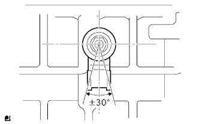
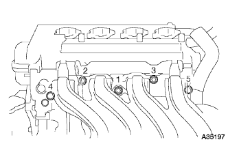
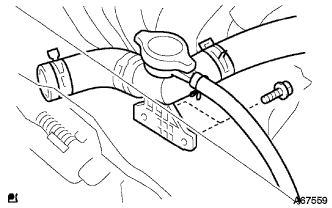

ノックコントロール センサ 取り付け |
| 1. ノックコントロール センサ取り付け |
|  |
ナットで、ノックコントロールセンサを取り付ける。
ノックコントロールセンサのコネクターを接続する。
| 2. インテーク マニホルド取り付け |
新品のインテークマニホルドツウヘッドガスケットをインテークマニホールドに取り付ける。
|  |
図の順序でインテークマニホルドを仮締めした後、規定トルクで締め付ける。
インテークマニホールドにワイヤハーネスを接続する。
ボルト2本で、ブレーキブースタ用バキュームチューブを取り付ける。
| 3. ユニオン トゥー コネクタチューブ ホース接続 |
インテークマニホールドにユニオン トゥー コネクタチューブ ホースを接続する。
| 4. ベンチレーション ホース接続 |
インテークマニホールドにベンチレーシヨンホースを接続する。
| 5. ウォータ フィラSUB-ASSY取り付け |
|  |
ボルト2本で、ウオータフイラを取り付ける。
ラジエータホースNo.3およびラジエータリザーブタンクホースを接続する。
| 6. スロットル ボデーASSY取り付け |
新品のガスケットをインテークマニホールドに取り付ける。
ボルトおよびナット2個で､スロツトルボデーおよびアクセルレータコントロールケーブルブラケツトを取り付ける。
スロツトルポジシヨンセンサおよびアイドルスピードコントロールバルブのコネクタを接続する。
| 7. ウォータバイパス ホース NO.2接続 |
| 8. ウォータバイパス ホース接続 |
| 9. アクセルレータ コントロールケーブルASSY取り付け |
アクセルレータコントロールケーブルASSYのナットナットでアクセルレータコントロールケーブルブラケツトに接続する。
| 10. トランスミッションオイルフィラ チューブSUB-ASSY取り付け |
新品のOリングにオートフルードタイプT-IVを塗布し、オイルフイラチユーブに取り付ける。
ボルトで、オイルフイラチユーブをトランスアクスルASSYに取り付ける。
ボルトで、オイルクーラチユーブクランプをトランスアクスルASSYに取り付ける。
ブリーザホースをオイルフイラチユーブに取り付ける。
オイルレベルゲージをオイルフイラチユーブに取り付ける。
| 11. シリンダヘッド カバー NO.2取り付け |
 |
ナットA 2個を締め付け後、ナットB 2個でシリンダヘッドカバーNO.2を取り付ける。
| 12. エア クリーナASSY取り付け |
ボルト4本でエアクリーナケースとエアクリーナインレツトNo.1およびエアクリーナインレツトNo.2を取り付ける。
エアクリーナフイルタエレメントを取り付ける。
エアクリーナキヤツプとエアクリーナホースNo.1を取り付ける。
| 13. 冷却液(トヨタ純正スーパーLLC)補充 |
ラジエータドレーンコツクプラグを閉じて、冷却水をラジエータ注入口よりあふれるまで注入する。［＊１］
ラジエータキヤツプを締める。
ラジエータリザーブタンクに冷却液を上限まで注入する。
エンジンをサーモスタツトが開弁するまで暖機する。
エンジンを止め、冷却液が冷えるまで待ち、ラジエータキヤツプをはずして水位を確認する。
水位が下がっている場合は、［＊１］より繰り返す。
水位が下がらなくなったら、ラジエータリザーバタンクの冷却液を調整する。
| 14. 冷却液(トヨタ純正スーパーLLC)漏れ点検 |
冷却液を満水にしてテスターを取り付ける。
137ｋＰａ｛1.4ｋｇｆ/ｃｍ２｝の圧力をかけ、各部に水漏れがないことを確認する。